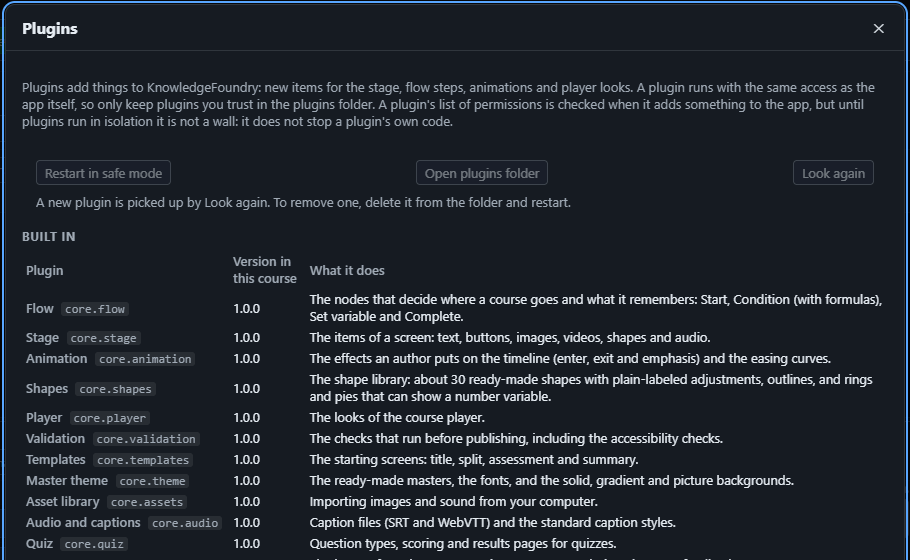

Plugins
Plugins add things to KnowledgeFoundry: new kinds of items for the stage, new flow steps, animations, player looks. Some come with the app (see Help → Plugins…); you can add others.
Help → Plugins… lists the plugins that come with the app and, below them, the ones from your plugins folder:

- Add a plugin: open Help → Plugins… → Open plugins folder and put the plugin there, either as a folder or as a zip (it has a
plugin.jsonand anindex.jsinside). Choose Look again. If it does not load, it is listed under Not loaded with the reason. - Use it in a course: tick Use in this course next to the plugin. A plugin the course does not list is not used. The course remembers which plugins and versions it uses.
- Choose a version: if more than one version of a plugin is installed, pick the one this course should use. The plugins that come with the app are always on; only the version can change.
- Export: a course carries the code of the plugins it uses, so they work for learners.
- What a plugin can add: new items for the stage, flow steps, animations and keyframe properties, player buttons, panels and looks, ways to publish (export targets) and extra steps when publishing, extra checks in Check course, screen templates, quiz page templates, ready-made masters, fonts and backgrounds, places to find images and sounds, converters for other file types, ways to turn speech into captions, caption file formats and styles, and ways to score a quiz or show its results.
- Only keep plugins you trust in the folder. A plugin runs with the same access as the app. Isolation is planned but not built yet.
- Permissions. A plugin lists what it needs, such as contacting the internet, reading files, or putting its own code in your published courses. Help → Plugins… shows these in plain words next to each plugin, and marks the sensitive ones. Read them before you tick Use in this course. The app refuses a plugin that does something it did not list. This is not yet a wall: until plugins run in isolation, only keep plugins you trust.
- If a plugin causes trouble, use safe mode. Choose Help → Restart in safe mode (or the same button in Help → Plugins…). The app starts again with only the plugins that come with it, each at its newest version, and it does not look in the plugins folder. Your course file is not changed, so you can open it, fix or remove the plugin, and choose Help → Restart normally. In safe mode the plugin choices are switched off, and a course that uses plugins from the folder cannot be exported until you restart normally. If the app will not open at all, start it with
--safe-modeadded to the shortcut's Target.